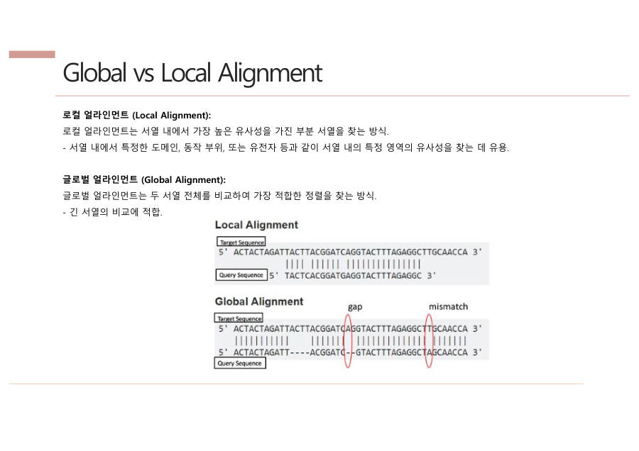

← 보드6장 QC → 얼라인먼트 → BAM · 6/14
얼라인먼트 — 조각을 제자리에 놓기
얼라인먼트 (alignment, 매핑)
짧은 조각(read)들이 레퍼런스(표준 게놈, 정답지)의 몇 번째 자리인지 찾아 맞추는 일이에요. 자리를 알아야 "원래 G인데 여기는 A네" 하고 변이를 찾을 수 있어요.
비유
퍼즐 상자 뚜껑에는 완성 그림(레퍼런스)이 있어요. 수억 개의 퍼즐 조각(read)을 그 그림을 보면서 제자리에 하나하나 놓는 일이 얼라인먼트예요.
얼라인 방식은 두 종류가 있어요.
| Global (전체) | Local (부분) | |
|---|---|---|
| 방법 | 두 서열을 처음부터 끝까지 비교 | 가장 비슷한 부분만 찾아 비교 |
| 비유 | 숲 보기 — 무슨 종인지 | 나무 보기 — 어디가 다른지 |
| 변이 찾기 | 잘 안 써요 | 이걸 써요 |
산에서 캔 식물이 무슨 종인지 알고 싶을 때는 여러 종의 DNA와 통째로 비교하는 global이 알맞아요. 반면 변이 하나가 중요한 우리 분석은 가장 비슷한 부분을 세밀하게 보는 local을 써요.

시험엔 이렇게 써요
얼라인먼트는 read가 레퍼런스의 어느 위치에 해당하는지 찾아 맞추는 과정으로, 그 위치를 알아야 변이를 찾을 수 있다. global alignment는 서열 전체를, local alignment는 가장 유사한 부분을 비교하며 변이 탐색에는 local을 쓴다.
잠깐 확인 — 변이를 찾는 분석에는 global과 local 중 어느 쪽을 쓸까요?
local이에요. 변이는 전체가 아니라 비슷한 부분 안의 작은 차이를 찾는 일이라서요.
다음 카드 → BLAST에서 BWA로 — 왜 더 빠를까
자료: 4·6·7주차 · 3. NGS(리눅스) · 5. DNA variant 분석 · 라이프05·07·08